Theorem
If
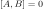
and is non-degenerate, every eigenket of is an eigenket of
is non-degenerate, every eigenket of is an eigenket of 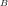
. In general (degenerate) one can choose a common orthonormal eigenbasis  . Conversely, a common eigenbasis implies .
. Conversely, a common eigenbasis implies .
Proof
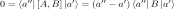
. For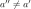
the matrix element vanishes: is block-diagonal on the eigenspaces of. In each block is Hermitian, so it can be diagonalised there without leaving the block, and the new basis is still an eigenbasis of . Conversely, 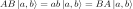
on a basis.Commutator algebra
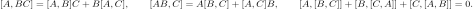
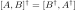
: the commutator of two Hermitian operators is anti-Hermitian, so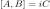
with Hermitian (Born and Jordan 1925).
Hermitian (Born and Jordan 1925).
Physical meaning
Measure (get
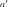
), then , then again. If the third result is with certainty. If not, the measurement scrambles : this is the third Stern–Gerlach experiment, with 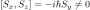
.Worked example
For hydrogen without spin,
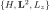
is a CSCO: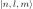
. Adding spin,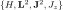
or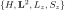
are two alternative CSCOs (see addition of angular momenta).Pitfall
on one state (e.g.
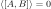
) does not make the observables compatible: compatibility is an operator identity.